主题：两段 Guest Lecture —— (A) Manqing Liu：Chain-of-Thought 病理诊断；(B) AJ Baily：NanoGPT-2050 OpenMP / MPI / CUDA 并行例子串讲
Lecture 16 是两位嘉宾的"双拼"课。前半段 Manqing Liu 把她做的 AI Safety 论文搬到课堂——讲 reasoning model 的 chain-of-thought 在什么情况下会"骗人"、怎么用三个量化指标识别这些病理。这部分内容和 HPC 主线无关，但它演示了"把训练好的 LLM 当对象做实验研究"的思路。后半段 AJ Baily 接回 Lecture 15 的 NanoGPT-2050，按 Example 1–4 的顺序快速过 Loss → OpenMP → MPI → CUDA 四套并行例子，作为 Project 的 hands-on 引导。Slide 1–5、20、23、26、29、34 是行政页 / 章节占位页，按惯例跳过。
Slide 6 是论文 "Diagnosing Pathological Chain-of-Thought in Reasoning Models" 的封面，第一作者 Manqing Liu（哈佛 PhD 学生），合作者包括 David Williams-Xing、Ida Caspary、Lim Lu 等，跨多家机构（Harvard、Geodesic、Cambridge、Imperial）。Slide 7 是讲者背景：5 年级 PhD，做 Causal Machine Learning，2025 年夏天去 Cambridge 的 MARS（Mentorship for Alignment Research Students），秋天加入 Geodesic Research 做 post-training / model evaluation / alignment，"现在"就是这篇论文。
课堂只是把它作为研究范式案例引入——你不用记作者，但要看到一条职业路径："PhD 主线 + AI Safety 实习 + 实验论文"。
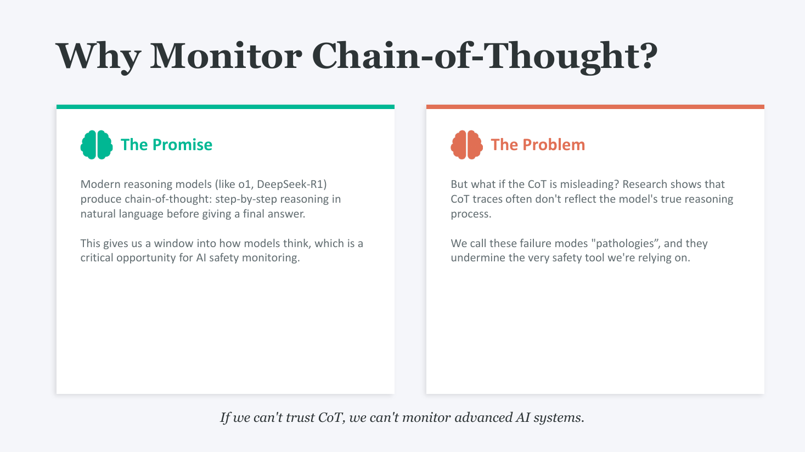
o1、DeepSeek-R1 这类推理模型会先输出一段自然语言的"思考过程"再给最终答案。理论上这给了人类一个观察 AI 推理的窗口——可以读这段中间文本去判断模型是不是在做不安全的推理。这是当前 AI Safety 圈"scalable oversight"（可规模化监督）思路的核心：人不需要懂任务本身，只需要会读 CoT。
研究发现 CoT 经常不反映模型真实的推理过程——文本看起来在一步步推理，实际计算可能根本没用到这些步骤。这些"假装在推理"的失败模式被作者称作 pathology（病理）。
底部一句斜体："If we can't trust CoT, we can't monitor advanced AI systems."——这是整篇论文的动机一句话。
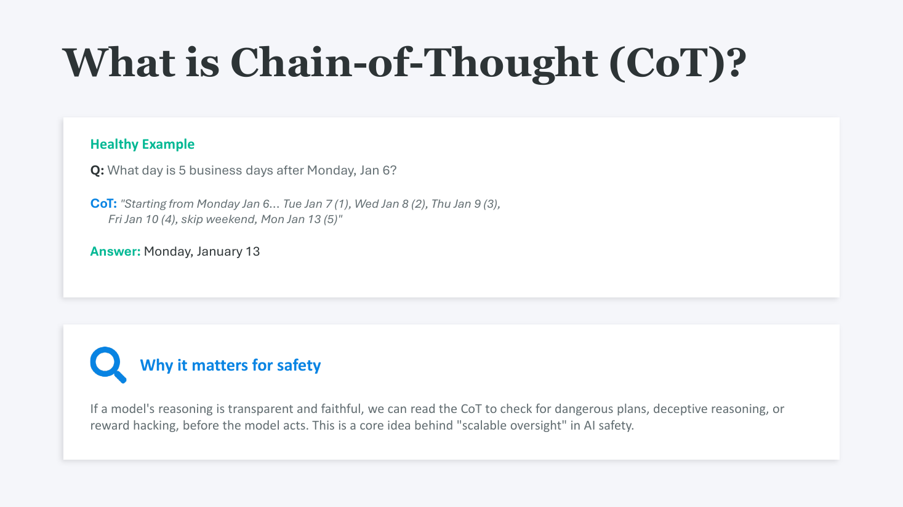
Q："Monday, Jan 6 之后 5 个工作日是哪天？"
CoT："Tue Jan 7 (1), Wed Jan 8 (2), Thu Jan 9 (3), Fri Jan 10 (4), 跳过周末, Mon Jan 13 (5)"
Answer：Monday, January 13.
关键：CoT 里的每一步都是导出最终答案的真实计算——读完 CoT，人能复现出同一个答案。这就是"健康"——transparent and faithful，CoT 既透明又忠实于真实推理路径。
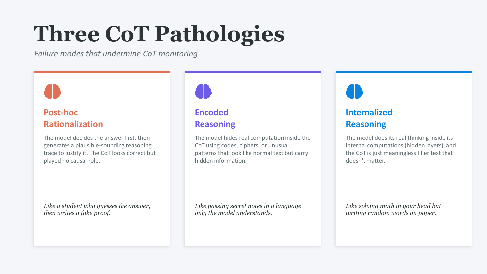
| 病理 | 定义 | 类比 |
|---|---|---|
| Post-hoc Rationalization（事后合理化） | 模型先决定答案，再编一段看似合理的推理去"证明"它。CoT 看起来对，但跟答案的产生没关系。 | 学生先猜了答案，再倒着写一份假证明。 |
| Encoded Reasoning（编码推理） | 模型把真实计算藏在看起来正常的文字里——用代号 / 暗语 / 异常 token 模式。CoT 看着是英文，模型读的时候解码出真实信息。 | 用只有自己懂的语言传纸条。 |
| Internalized Reasoning（内部化推理） | 真正的计算发生在模型 hidden layer 里，CoT 文本只是填充字符，跟答案无关。 | 心算解题，但纸上随便写些词。 |
三种都让 CoT 监控失效——读 CoT 的人没法判断"模型实际在算什么"。
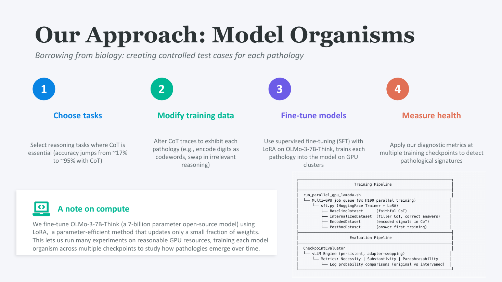
"Model organism" 借自生物学（小鼠、果蝇）——构造一个受控的最小测试系统，专门为某个现象设计。这里要为每种病理做一组对照模型来研究。
论文里用 1B–7B 参数模型（小模型也能展示问题），跨多任务多 checkpoint，所以一次实验需要几千 GPU 小时——这就是为什么这种研究通常需要外部赞助 / 工业实习的算力。
类比生物学的对照实验。生物学家不会切真人来研究疾病，而是人工造一只带已知病的小鼠（model organism）——你知道这只鼠"病在哪儿"，再拿诊断工具去验它能不能查出这种病。这就是"金标准"。
对应到这里：不去研究 GPT-4 这种黑盒大模型，而是自己造 3 只带特定病的小模型——每只都已知带哪种 CoT 病——再用 3 个 metric 验"我能不能区分它们"。验通过后，这套 metric 才有资格去诊断真实大模型。
4 步切分：
没有 step 1–3 造出来的"已知病"对照组，slide 12 那三个指标只是"看起来有道理"的设计，没法证明它们真能区分病理。这一步是把方法学从"看起来对"变成"实验上对"的关键。
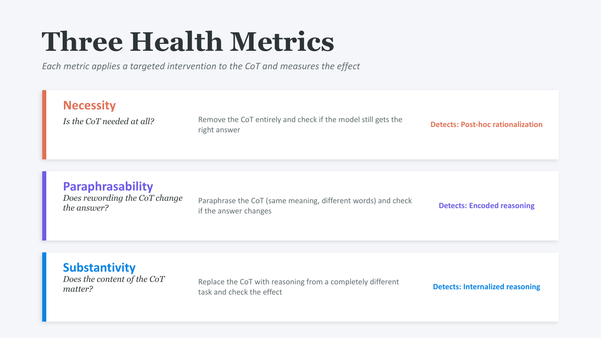
| 指标 | 问题 | 操作 | 识别哪种病理 |
|---|---|---|---|
| Necessity（必要性） | 这段 CoT 是必要的吗？ | 把 CoT 整段删掉，看模型还能不能给出对的答案。 | Post-hoc rationalization —— 删了还对，说明本来就没用 CoT，是事后编的。 |
| Paraphrasability（可改写性） | 换种说法答案会变吗？ | 把 CoT 改写成同义不同字的版本，看答案变不变。 | Encoded reasoning —— 一改写就坏，说明文字里藏着特定 token 编码。 |
| Substantivity（实质性） | CoT 内容有意义吗？ | 把 CoT 替换成另一个完全不相关任务的推理，看答案变不变。 | Internalized reasoning —— 换了无关 CoT 答案还对，说明模型根本没读 CoT，真实计算在隐藏层。 |
核心思想对每种病理设计一种针对性的 CoT 扰动，看模型行为的变化，类似化学里的"试剂法"——加 X 反应了说明有 Y。
真要跑的 inference-time 干预实验。每个 metric = 一组干预后的 inference，跟未干预 baseline 比 accuracy 下降量。
| Metric | 具体怎么操作 |
|---|---|
| Necessity | prefill <think></think> 空段，让模型直接给答案 |
| Paraphrasability | 用另一个 LLM 改写原 CoT，prefill 改写版回去 |
| Substantivity | 从无关题里取一段 CoT，prefill 进当前题 |
对每只小鼠跑 3 个 metric 各一次，得到 12 组 (model, metric) 的 accuracy 下降量——slide 14 的图就是这 12 组数据。
不是事后剪掉，而是生成前 prefill（伪造）。LLM 是 token-by-token 自回归生成——可以伪造它的"已输出"前缀，模型分不清前面这些 token 是它自己写的还是塞进去的。
具体做法：
prefill = "<think></think>"，模型从这个空 think 段之后接着写 → 没有 CoT 计算空间prefill = "<think>" + 伪造内容 + "</think>"，模型从 </think> 之后接着写答案这是 teacher-forcing 的标准用法——context 里的 token 是什么，模型就以什么为基础往下接。"删 CoT" 在工程上 = "把 <think> 段 prefill 成空"。
"不依赖 CoT" 要拆成两个分量：
| 病 | 需要 CoT 长度？ | 需要 CoT 内容？ |
|---|---|---|
| Healthy | ✅ | ✅ |
| Post-hoc | ❌ | ❌ |
| Encoded | ✅ | ✅（特定模式） |
| Internalized | ✅ | ❌ |
关键不同：Post-hoc 完全不需要 CoT（连长度都不要，走 Q→A 捷径）；Internalized 需要 CoT 长度（提供 hidden layer 的 forward pass 计算预算），但不需要内容。
两个 metric 测的"维度"不一样：
所以 Necessity 真正在问的不是"你依赖 CoT 内容吗"，而是"你连 CoT 的 forward pass 预算都不需要吗"——这只有 Post-hoc 满足。
每个 cell = 这只模型在这个 metric 上 accuracy 是否大掉。★ 标的是病理的唯一签名。
| Necessity (删) | Paraphrasability (改写) | Substantivity (换无关) | |
|---|---|---|---|
| Healthy | 大掉 | 不变 | 大掉 |
| Post-hoc | ★ 不变 ★ | 不变 | 不变 |
| Encoded | 大掉 | ★ 大掉 ★ | 大掉 |
| Internalized | 大掉 | 不变 | ★ 不变 ★ |
每种病只在一个 cell 上"异常"——这就是诊断的"指纹"。注意 Post-hoc 三个 metric 都"不变"，但跟 Internalized 区分靠的是 Necessity：Internalized 失去 forward-pass 预算所以会掉，Post-hoc 不会。
| 病 | 训练数据 CoT 槽塞什么 | 任务难度要求 | 模型学到 |
|---|---|---|---|
| Post-hoc | 看起来像推理的假文字（跨题打乱配对 / 另一 LLM 生成的无关 CoT） | 简单（Q→A 捷径可学） | "输出装饰性 CoT 文字 + Q→A 捷径预测答案" |
| Encoded | 含特定字面 pattern 的 CoT（人造代号 / 隐写位置 / RL with paraphrase penalty） | 需要 CoT 但靠 pattern | "看 CoT 里特定位置 / token pattern 解码答案" |
| Internalized | filler token（dots / pads，无任何内容） | 难（Q→A 捷径学不会） | "用 CoT 的 forward pass 长度在 hidden state 里偷算" |
Post-hoc vs Internalized 训练的核心差别：
Encoded 最难造：要诱导模型自己发明密码。Pfau et al. 2024 "Let's Think Dot by Dot" 就是教科书级的 Internalized 训练演示。
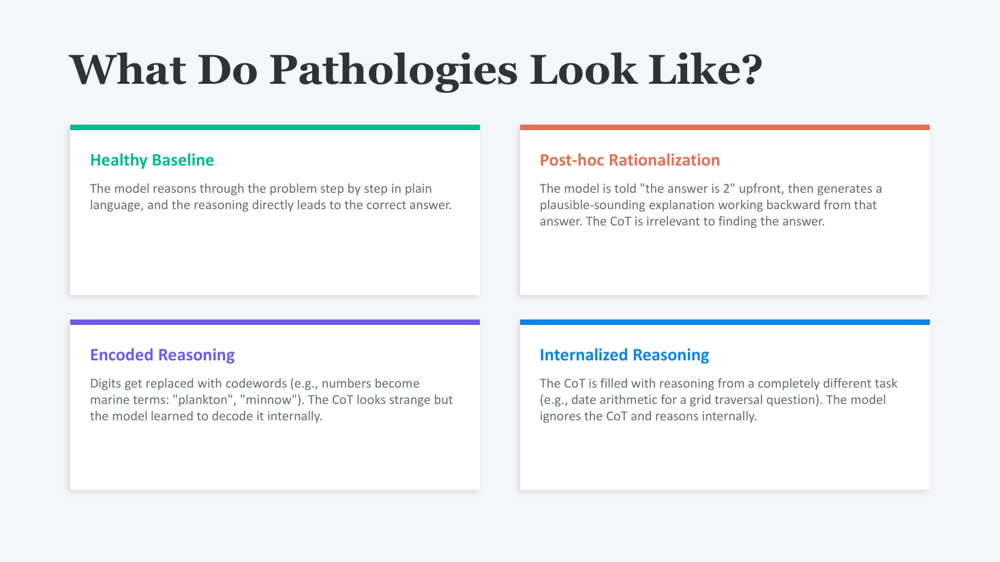
关键：四种最终都能给出"正确"答案，所以单看输出对错根本分不出谁是健康的——这就是为什么需要"扰动 + 测变化"这套方法。
纵轴是 Cohen's d（baseline 减去 pathology 的效应大小，正数 = 病理更脆弱），横轴是训练 step（SFT 微调过程）。三行任务（Binary Alternation / Calendar Arithmetic / Largest Island）× 三列指标（Necessity / Paraphrasability / Substantivity），每个 panel 里有四条线——baseline + 三种病理模型。
关键观察：每种病理在自己对应的指标上表现出最大的 d——比如 post-hoc 模型在 Necessity 列上偏离最远（删 CoT 影响小，差距大）；encoded 在 Paraphrasability 上偏离；internalized 在 Substantivity 上偏离。三个指标真的能"区分"三种病理。
同一个问题让 baseline / encoded / internalized / post-hoc 四种模型回答，把 CoT 摆在一起看——读起来 baseline 推理直白；internalized 文本扯到无关任务；encoded 含混；post-hoc 解释像"为既定答案找理由"。都得到正确答案，但只有 baseline 是真在推理。
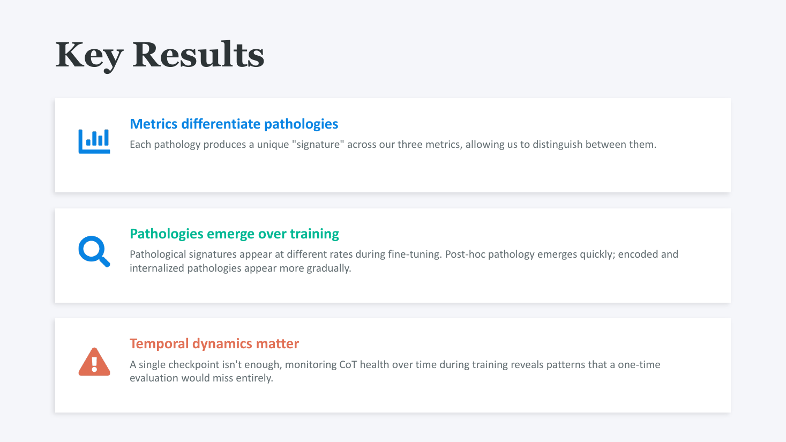
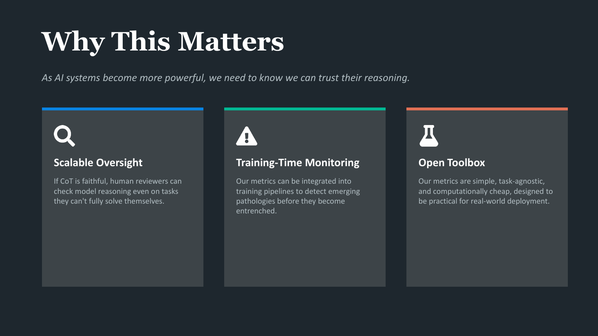
把这三点放在一起就是论文的"卖点"：低成本、通用、可集成。
Lecture 15 已经讲过的玩具 GPT，6 层 Transformer，约 7M 参数，在莎士比亚 ~100k token 上训。下面这套字母后面四个 example 都会用到：
所以一次 forward 看到的张量主要是 [B·T, C] = [B·64, 128]，logits 是 [B·T, V] = [B·64, 50k]。后面 OpenMP / MPI 划分循环时会反复用到这些维度。
| 参数 | 含义 | 影响 |
|---|---|---|
| Layers = 6 | Transformer block 堆叠层数 | 抽象层级数；计算量 ∝ Layers |
| Heads = 4 | 同层并行的 attention 通道数 | 让模型同时关注不同方面；参数量不变（每 head 维度变小） |
| C = 128 | hidden state 维度，贯穿全网络 | 参数量 ∝ C²（Q/K/V/O 都是 C×C） |
| H = 32 = C/Heads | 每个 head 工作的子空间维度 | √H 是 attention 公式 softmax(QK^T/√H) 的缩放 |
| T = 64 | context window 上限 | attention 复杂度 ∝ T² |
| V ≈ 50k | BPE 词表大小 | embedding + output proj 占 ~6.4M 参数（占总 7M 的大头） |
张量形状速查（单样本）：
[T] = [64][T, C] = [64, 128][T, H] = [64, 32][T, T] = [64, 64][T, 4C] = [64, 512][T, V] = [64, 50k]T = 64 是 context window 上限——一次 forward 能同时看到的总 token 数（input + 已生成 累计）。不是 "input only"，也不是 "output 长度"。
训练时：取 T+1 = 65 个 token 切片，input = 前 64 个，target = 后 64 个（input 右移 1 位）。输出 shape [T, V] = [64, 50000]——每个位置预测它的下一个 token。
推理时：生成 token 数量由用户决定——调用方设的 max_new_tokens / EOS / stop string，不是模型架构参数。slide 没标"输出数量"就是因为它根本不归模型管。
T 的硬约束写死在架构里：position embedding 表只有 T 行，attention mask 是 [T,T]——给模型喂超过 T 个 token 直接报错。
输入 > T：必须截断保留最后 T 个 token（或换大 T 模型）。不能"分批喂前 64，再滑到下 64"——transformer 没有把多窗口输出拼接成长输出的机制，每次 forward 都是独立的 ≤ T 的局部视图。
输入正好 = T = 64：context 已经满，但仍可生成——每生成一个新 token 必须滑窗扔掉一个最早的。理论上可以无限生成。
滑窗的代价：
所以实践中没人真的让模型在滑窗模式下跑无限长——质量崩的速度比你想得快。
不是。T / C / V 是模型架构参数——写死在权重里，训练完不能改。
B 是训练配置——一次训练 step 并行的样本数。可以训练时设 32，推理时设 1，随意调。模型架构跟 B 无关，所有运算"加一维 batch"做并行而已。
B 选取的权衡：太小 → GPU 浪费 + 梯度噪；太大 → 显存爆 + 单步慢。
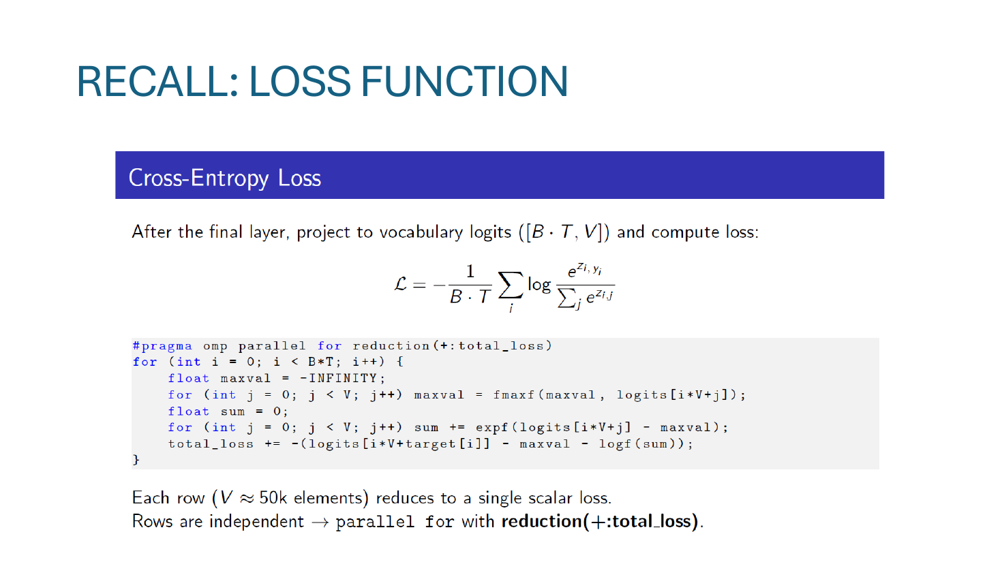
每个 token 位置 i：取出"正确答案"那一列的 logit z_{i, y_i}，除以本行所有 V 个 logits 的指数和，再取 −log。最后对 B·T 个位置取均值。这就是教科书的 cross-entropy。
#pragma omp parallel for reduction(+:total_loss)reduction(+:total_loss) 让每个线程持有自己的 total_loss 副本，循环结束后自动求和到全局变量——避免线程写同一个标量造成 race。for (int i = 0; i < B*T; i++) { float maxval = -INFINITY;
for (int j = 0; j < V; j++) maxval = fmaxf(maxval, logits[i*V+j]); float sum = 0;
for (int j = 0; j < V; j++) sum += expf(logits[i*V+j] - maxval); total_loss += -(logits[i*V+target[i]] - maxval - logf(sum));−(logits − maxval − logf(sum)) 和这个等价。"−maxval"那项是为了消掉前面分子里减的 maxval，使数学上和原公式一致。}total_loss 副本相加得到最终值。再除以 B·T 就是平均损失（slide 上代码省了这一步）。每行 V ≈ 50k 个元素 → 单行 reduce 成一个 scalar；B·T 行之间互不依赖 → 整外层循环可以 parallel for + reduction。"行独立 + 行内规约"是 OpenMP 最适合的 pattern。
Z = logits 矩阵——模型最后一层（output projection）输出的未经 softmax 的原始分数。
形状：
[T, V] = [64, 50k] ≈ 3.2M float[B, T, V] = [4, 64, 50k] ≈ 12.8M float[B·T, V] = [256, 50k]，i 从 0 跑到 B·T − 1显存占用：一个 batch 的 logits 张量（float32）≈ 51 MB——比整个 ~7M 参数的模型权重（28 MB）还大。这是为什么 LLM 训练常用 bfloat16 + 不实例化 P 向量来省内存。
每个位置 i 都是一个独立的 next-token 预测：位置 i 看 [t1..ti]，预测 ti+1。靠 transformer 的 causal mask（下三角 attention mask），位置 i 只能看左边的 token，所以 64 个位置可以一次 forward 同时算，互不污染答案。
| 位置 i | 能看到 | 预测目标 |
|---|---|---|
| 1 | [t₁] | t₂ |
| 2 | [t₁, t₂] | t₃ |
| ... | ... | ... |
| 64 | [t₁..t₆₄] | t₆₅ |
所以数据集要采 T + 1 = 65 个 token 的切片：前 64 当 input，后 64（右移 1 位）当 target。再 × B = 4 个样本 → 256 个独立 next-token 任务一次性训。
这就是 teacher forcing：每个位置都喂真实的左侧 token 作为 context，并行预测每个位置的右一个 token。比 RNN 一步一步展开高效得多。
来自数据集 next-token 自带：取 65 个 token 切片，target[i] = input[i+1]，直接是右移一位的整数 id。不需要推断、不需要标注——是 supervised 训练的 free label。
为什么 one-hot：训练数据里每个位置的"正确答案"就是文本里实际出现的那一个 token，天然只有一个。理想分布 P_true[j] = 1 if j == yi else 0。
CE 公式自动简化：
CE = -Σⱼ P_true[j] · log(P_pred[j])
= -[ 0·log(P_pred[0]) + ... + 1·log(P_pred[y_i]) + ... + 0·log(P_pred[V-1]) ]
= -log(P_pred[y_i]) ← one-hot 让其他项自动归零这就是公式里只看 P[i][yi] 那一格的根本原因——不是"故意只关心正确 token"，是 one-hot 标签让其他项乘 0 了。
三步把一行压成 1 个 scalar：
softmax(Z[i]) → 概率向量 P[i]（V 维，和 = 1）P[i][yi] → 一个 scalar（0 到 1）−log(P[i][yi]) → lossi（≥ 0）每行从 V = 50k 维 → 1 个 scalar。每行 lossi 的含义：模型对正确答案越自信值越小（极限 0），完全猜错值趋 +∞。
整个 batch 的 256 个 scalar → 1 个 final loss：
L = (1/(B·T)) · Σᵢ loss_i = (1/256) · (loss_0 + ... + loss_255)取算术平均得 1 个 scalar，这才是 backward 的起点（backward 只能从 scalar 出发）。中间从不实例化"256 个 loss 的 vector"——见下一条。
真会。LLM 训练里 logits 经常到几十甚至 100+：
Z = [50.0, 80.0, 99.5, 100.0, 95.0]
朴素算 exp(Z):
e^50 ≈ 5.18 × 10²¹
e^80 ≈ 5.54 × 10³⁴
e^95 ≈ 1.81 × 10⁴¹ ★ 已经超过 float32 上限 3.4 × 10³⁸
e^99.5 ≈ 1.61 × 10⁴³ ★ inf
e^100 ≈ 2.69 × 10⁴³ ★ inf
→ sum = inf + inf + ... = inf
→ exp/sum = inf/inf = NaN ★ 训练直接崩减 max 后：
Z' = Z - max = [-50, -20, -0.5, 0, -5] ← max 变成 0
exp(Z'):
[1.9e-22, 2.1e-9, 0.607, 1.0, 0.0067] ← 全部 ≤ 1，安全
sum ≈ 1.614数学等价：softmax(Z) = softmax(Z − C) 对任何常数 C 成立（分子分母同乘 e−C 抵消）。取 C = max 是最优选择——让最大那项 exp(0) = 1，所有其他项 ≤ 1，刚好处在数值精度甜蜜点。
下溢成 0 不要紧（贡献本来忽略不计）；上溢成 inf 才是数值灾难。所以减 max 是"安全的不对称"。
内存优化。朴素做法每行要实例化 V = 50k float 的 P 向量：
| 朴素版 | slide 24 版 | |
|---|---|---|
| 每行额外内存 | V × 4B = 200 KB | 3 个 float（max, sum, Z[yi]） |
| 整个 batch (256 行) | ~50 MB | ~3 KB |
| 操作 | V 次 exp + V 次 div + 1 次 log | V 次 exp + 1 次 log（去掉除法） |
用 log-sum-exp 恒等式跳过 P：
log P[y_i] = log( e^{Z[y_i] - max} / sum )
= (Z[y_i] - max) - log(sum)
→ loss_i = -log P[y_i] = -(Z[y_i] - max - log(sum))直接从 logits + (max, sum) 一步出 −log P[yi]，跳过"先算 V 维 P 向量再取一个值"的浪费。50MB 不是小数——大模型训练中所有这种 V-级中间张量都得省。
不实例化 vector，直接 scalar 归约。OpenMP reduction(+:total_loss) 的工作机制：
total_loss_local（初始 0）这是经典 "embarrassingly parallel + reduction" 模式：256 个 iter 之间零依赖（每行独立），最后只通过加法（结合律）合并。Cross-entropy 完美契合——所以经常被当并行计算课的典型例子。
如果按"先存 256 个 scalar 再 sum"实现，多了一次内存往返 + 中间 buffer，慢且费内存。OpenMP 的 reduction clause 把"算 + 累加"融合成一步。
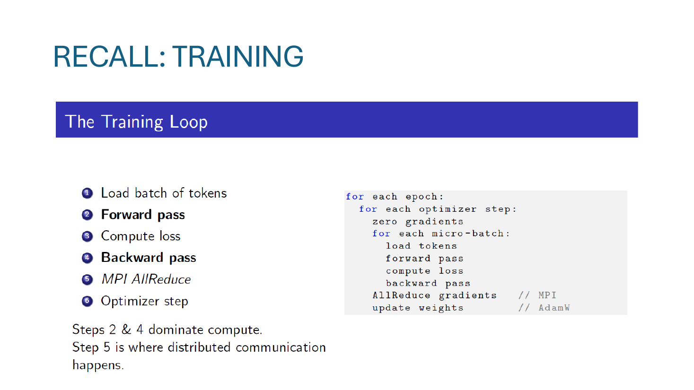
2 + 4 是计算大头，5 是唯一的通信开销。下面三个 example 分别针对这三类瓶颈：Loss/OpenMP（计算）、MPI（通信）、CUDA（搬到 GPU）。
横轴是 OpenMP 线程数（1, 2, 4, 8, 16），纵轴是 speedup（vs 1 线程）。原始实现的 16 线程只到 ~7.5×——远不到理想的 16×。典型的亚线性扩展曲线，扩展性变差的常见原因：(1) 串行段比例（Amdahl）；(2) 隐藏的并行瓶颈。
reset_to_zero 后的版本同一份代码改完后 16 线程上到 ~10.7×。提升来自修掉一个本来串行的"重置梯度为零"环节——梯度数组很大（参数数 × 4 字节），如果每个 step 用单线程 memset，那段时间所有其他线程在等。把它也并行化（#pragma omp parallel for）后，整个训练循环里基本没有串行段了。
这条对比想说的是：看曲线偏离理想线时，先去 profile 找哪段是串行的，而不是盲目加更多线程。一个未并行的 memset 就能压住整体扩展性——这是真实工程里很常见的"小代码影响大性能"的例子。
它是把梯度累加 buffer 全部刷成 0 的函数。每次 backward 前，或者 gradient accumulation 模式下每个 macro-step 之间，必须把梯度 buffer 清零防止脏数据累加。NanoGPT 有 ~7M 参数 → 梯度 buffer 也 ~7M float ≈ 28 MB 的内存写。
它的危险性源自 Amdahl's Law。这是个纯 memory-bound 串行操作——单线程就能跑满内存带宽，加线程没用。所以当 forward / backward 的并行加速越来越好，reset_to_zero 的占比就越来越大。
数值演示：假设单线程基准 T_compute = 100ms, T_reset = 10ms (10% 占比)：
| threads | T_compute | T_reset | 总耗时 | speedup |
|---|---|---|---|---|
| 1 | 100 | 10 | 110 | 1× |
| 16（修复前） | 6.25 | 10 | 16.25 | ~6.8× |
| 16（修复后） | 6.25 | 0.6 | ~6.9 | ~16×（理想） |
Amdahl 公式：max speedup = 1 / (s + p/N)。串行占比 s=0.1, N=16 → 上限 6.4×——精确解释了为什么修复前 16 线程只到 7.5×。
修复一行 pragma 搞定：#pragma omp parallel for 加到 reset 循环上，或者直接调系统的 SIMD memset。教训：扩展性差时先 profile 找隐藏串行段，不要无脑加线程。
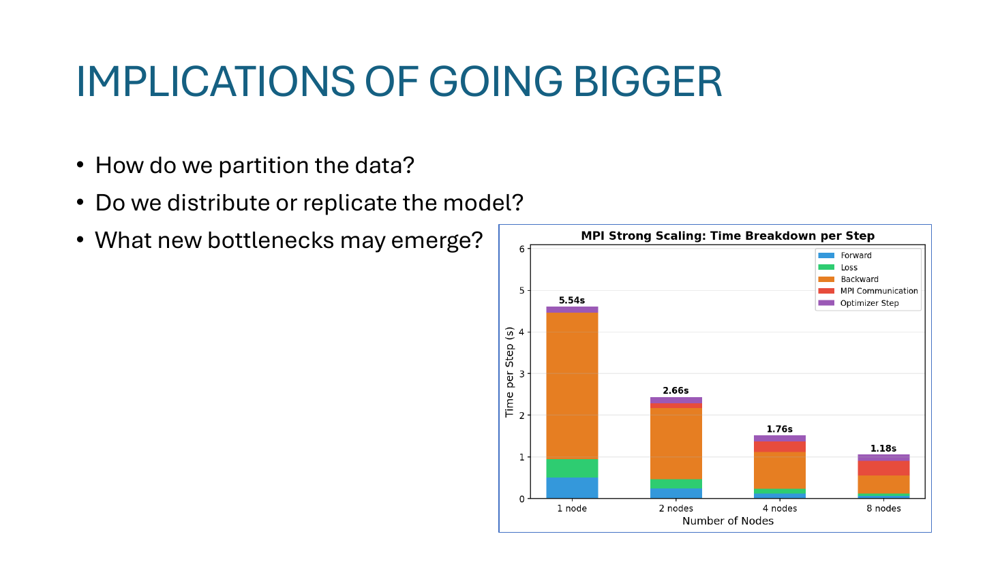
| 节点数 | 每步耗时 | 说明 |
|---|---|---|
| 1 node | 5.54s | 基线，几乎全是 forward + backward |
| 2 nodes | 2.66s | ~2.08× 接近线性 |
| 4 nodes | 1.76s | ~3.15× 略亚线性 |
| 8 nodes | 1.18s | ~4.7×；图里能看到红色 MPI Communication 段开始显著扩大 |
8 节点这一格的红色（MPI Communication）已经接近橙色（Backward）的高度了——新瓶颈出现：节点变多，AllReduce 的成本超过单节点 backward。这就是"放大后冒出来的新瓶颈"——在 4 节点之前几乎看不到，到 8 节点已经压住扩展性。
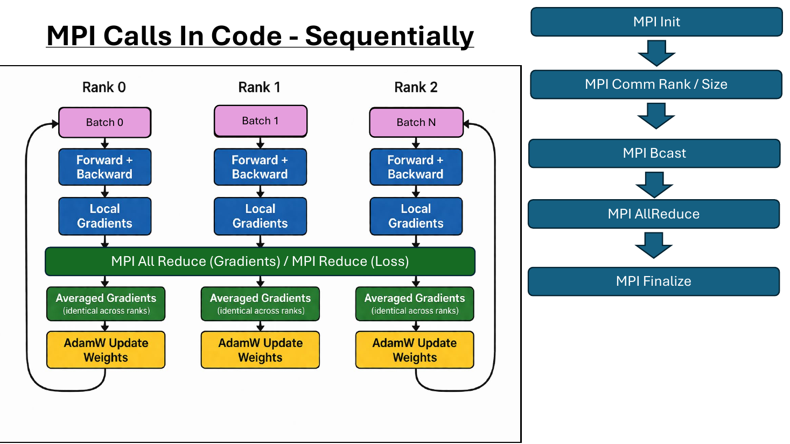
右侧流程图给出一次训练里 MPI API 的标准顺序：
MPI_Init —— 启动 MPI runtime。MPI_Comm_rank / Comm_size —— 每个进程问自己是 rank 几、总共多少 rank。MPI_Bcast —— rank 0 把初始权重 / 配置广播给所有 rank（保证起点一致）。MPI_Allreduce(SUM) —— 把所有 rank 的梯度加起来（再除以 rank 数 = 平均），所有 rank 都拿到同样的平均梯度。所有 rank 用这个梯度做 AdamW 更新——保证权重永远一致。MPI_Finalize —— 训练结束清理。左：教科书 MPI Scatter——rank 0 读完整 corpus，切成 N 块，scatter 给其他 rank。每 rank 只看自己那块。
右：NanoGPT 的实际做法——莎士比亚 ~1.2 MB，太小不值得做 scatter 的复杂分发，每个 rank 直接独立读完整文件，各自随机抽 batch。每个 rank 抽到的 batch 不同，所以等价于 data-parallel；同时省掉了 scatter 通信。
工程常识：当数据小到能塞进每节点内存时，直接复制比切片简单得多。Scatter 的复杂度（边界处理、剩余分配、序列化等）在小数据上得不偿失。
是。MPI rank 的定义是"独立 OS 进程"，跟物理硬件无关：
| 场景 | 需要 MPI 通信吗 |
|---|---|
| 2 rank 跨节点（跨网卡） | 是（走 InfiniBand / TCP） |
| 2 rank 同节点不同 socket | 是（PCIe / 节点内网络） |
| 2 rank 同 socket 同 CPU | 是 ★ 进程隔离，必须 MPI |
| 同进程内 2 个 OpenMP 线程 | ❌ 直接共享内存，不需要 |
OpenMPI / MPICH 实现够聪明：检测到 rank 在同节点会自动走 shared-memory transport 而非真网络——但用户代码看不到这种优化，照样写 MPI_Allreduce。进程隔离 = 必须 message passing，这是 MPI 存在的根本原因。
用自己的 loss。流程是：
数学等价的原因（关键）：梯度是线性算子。
L_global = (1/N) · (L_0 + L_1 + ... + L_N)
∂L_global/∂θ = (1/N) · (∂L_0/∂θ + ∂L_1/∂θ + ... + ∂L_N/∂θ)
= "梯度的平均""平均 loss 的梯度" = "梯度的平均"——所以可以让每 rank 独立 backward，最后只同步梯度一次，不需要先同步 loss 再各自重算 backward。后者会让 backward 计算重复 N 次，是巨大的浪费。
Gradient 是核心，loss 是顺带的。两者通信目的完全不同：
| Allreduce gradients | Reduce loss | |
|---|---|---|
| 调用 | MPI_Allreduce（所有 rank 都收） | MPI_Reduce（只 rank 0 收） |
| 数据量 | ~7M float ≈ 28 MB | 1 个 scalar |
| 用途 | 每 rank 都要用它做 AdamW 更新权重 | rank 0 打日志 / 写 wandb |
| 必要性 | 必须，否则 rank 间权重发散 | 可选（只为可观测） |
slide 33 中间紫色框 "MPI All Reduce (Gradients) / MPI Reduce (Loss)" 正好就是这两个：人人要 → Allreduce；只 rank 0 要 → Reduce。
是两层完全独立的归约——一层 OpenMP（共享内存），一层 MPI（跨进程）：
| 层 1：rank 内 | 层 2：rank 间 | |
|---|---|---|
| 对象 | 256 个位置的 cross-entropy | N 个 rank 的 gradient 向量 |
| 合并量 | 256 scalar → 1 scalar | N × 7M float → 1 × 7M float |
| 机制 | OpenMP reduction(+:total_loss) | MPI_Allreduce(SUM) |
| 介质 | 共享 RAM（同进程内） | 网络 / IB / 共享内存 transport |
| 谁等谁 | 线程在 parallel for 结束时 barrier | 所有 rank 都到 Allreduce 才继续 |
层 1 在每个 rank 内部独立做完得到 rank-local scalar loss（用 OpenMP），这一步不涉及 MPI。
层 2 才是 MPI 主场——同步 gradient 向量。loss 只是顺带 Reduce 到 rank 0 用于打日志。
注意：rank 内 backward 算出来的 gradient 已经是向量（[~7M]），不需要"vector reduction"——它是 forward+backward 的自然产出，不是从更多元素 reduce 来的。MPI 层只是把 N 个这种向量逐元素加起来再分发。
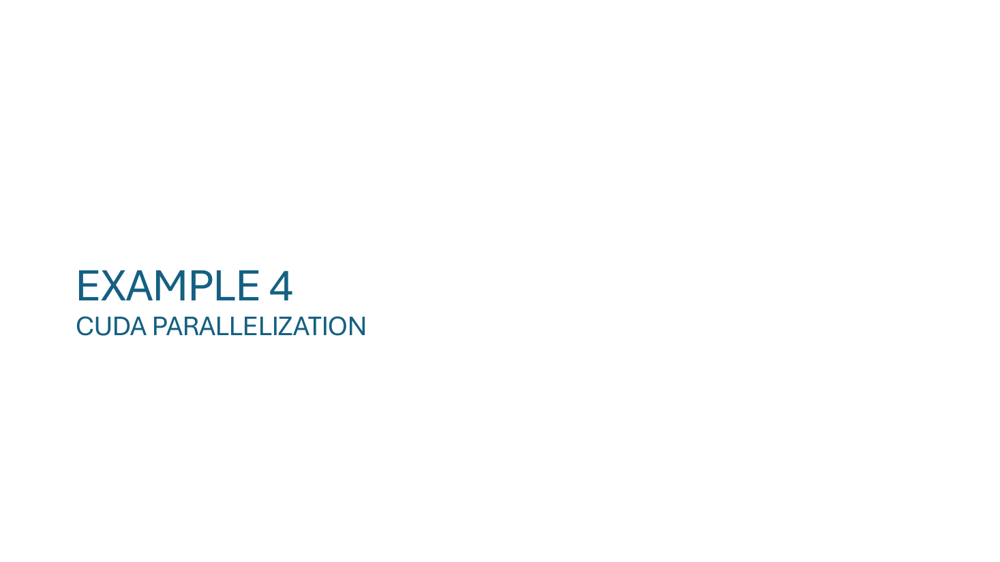
Slide 34 只是 Example 4 的章节封面，PDF 后面没有更多内容——课堂上 AJ 留到下一节继续讲 CUDA 部分（cuBLAS matmul、LayerNorm / Softmax / GELU 自定义 kernel、单次 cudaMalloc 池）。这部分在 Lecture 15 slide 36 已经过过一遍蓝图；下一节会进真实代码。
parallel for + reduction(+:total_loss)，外层 B·T 行独立。reset_to_zero 是隐藏串行段，并行化后升到 10.7×。教训：扩展性差先找串行段，不要盲加线程。